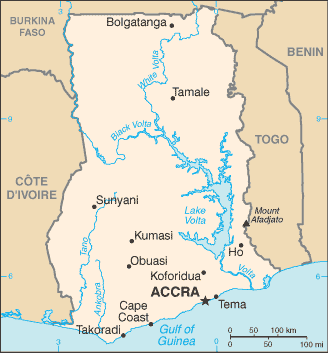
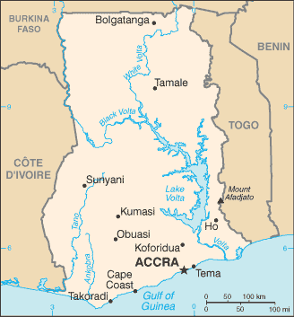

Africa :: GHANA
Introduction :: GHANA
-
Formed from the merger of the British colony of the Gold Coast and the Togoland trust territory, Ghana in 1957 became the first sub-Saharan country in colonial Africa to gain its independence. Ghana endured a series of coups before Lt. Jerry RAWLINGS took power in 1981 and banned political parties. After approving a new constitution and restoring multiparty politics in 1992, RAWLINGS won presidential elections in 1992 and 1996 but was constitutionally prevented from running for a third term in 2000. John KUFUOR of the opposition New Patriotic Party (NPP) succeeded him and was reelected in 2004. John Atta MILLS of the National Democratic Congress won the 2008 presidential election and took over as head of state, but he died in July 2012 and was constitutionally succeeded by his vice president, John Dramani MAHAMA, who subsequently won the December 2012 presidential election. In 2016, however, Nana Addo Dankwa AKUFO-ADDO of the NPP defeated MAHAMA, marking the third time that the Ghana’s presidency has changed parties since the return to democracy.
Geography :: GHANA
-
Western Africa, bordering the Gulf of Guinea, between Cote d'Ivoire and Togo8 00 N, 2 00 WAfricatotal: 238,533 sq kmland: 227,533 sq kmwater: 11,000 sq kmcountry comparison to the world: 83slightly smaller than Oregontotal: 2,420 kmborder countries (3): Burkina Faso 602 km, Cote d'Ivoire 720 km, Togo 1,098 km539 kmterritorial sea: 12 nmcontiguous zone: 24 nmexclusive economic zone: 200 nmcontinental shelf: 200 nmtropical; warm and comparatively dry along southeast coast; hot and humid in southwest; hot and dry in northmostly low plains with dissected plateau in south-central areamean elevation: 190 melevation extremes: lowest point: Atlantic Ocean 0 mhighest point: Mount Afadjato 885 mgold, timber, industrial diamonds, bauxite, manganese, fish, rubber, hydropower, petroleum, silver, salt, limestoneagricultural land: 69.1%arable land 20.7%; permanent crops 11.9%; permanent pasture 36.5%forest: 21.2%other: 9.7% (2011 est.)340 sq km (2012)population is concentrated in the southern half of the country, with the highest concentrations being on or near the Atlantic coastdry, dusty, northeastern harmattan winds from January to March; droughtsrecurrent drought in north severely affects agricultural activities; deforestation; overgrazing; soil erosion; poaching and habitat destruction threatens wildlife populations; water pollution; inadequate supplies of potable waterparty to: Biodiversity, Climate Change, Climate Change-Kyoto Protocol, Desertification, Endangered Species, Environmental Modification, Hazardous Wastes, Law of the Sea, Ozone Layer Protection, Ship Pollution, Tropical Timber 83, Tropical Timber 94, Wetlandssigned, but not ratified: Marine Life ConservationLake Volta is the world's largest artificial lake (manmade reservoir) by surface area (8,482 sq km; 3,275 sq mi); the lake was created following the completion of the Akosombo Dam in 1965, which holds back the White Volta and Black Volta Rivers
People and Society :: GHANA
-
27,499,924note: estimates for this country explicitly take into account the effects of excess mortality due to AIDS; this can result in lower life expectancy, higher infant mortality, higher death rates, lower population growth rates, and changes in the distribution of population by age and sex than would otherwise be expected (July 2017 est.)country comparison to the world: 49noun: Ghanaian(s)adjective: GhanaianAkan 47.5%, Mole-Dagbon 16.6%, Ewe 13.9%, Ga-Dangme 7.4%, Gurma 5.7%, Guan 3.7%, Grusi 2.5%, Mande 1.1%, other 1.4% (2010 est.)Asante 16%, Ewe 14%, Fante 11.6%, Boron (Brong) 4.9%, Dagomba 4.4%, Dangme 4.2%, Dagarte (Dagaba) 3.9%, Kokomba 3.5%, Akyem 3.2%, Ga 3.1%, other 31.2%note: English is the official language (2010 est.)Christian 71.2% (Pentecostal/Charismatic 28.3%, Protestant 18.4%, Catholic 13.1%, other 11.4%), Muslim 17.6%, traditional 5.2%, other 0.8%, none 5.2% (2010 est.)Ghana has a young age structure, with approximately 57% of the population under the age of 25. Its total fertility rate fell significantly during the 1980s and 1990s but has stalled at around four children per woman for the last few years. Fertility remains higher in the northern region than the Greater Accra region. On average, desired fertility has remained stable for several years; urban dwellers want fewer children than rural residents. Increased life expectancy, due to better health care, nutrition, and hygiene, and reduced fertility have increased Ghana’s share of elderly persons; Ghana’s proportion of persons aged 60+ is among the highest in sub-Saharan Africa. Poverty has declined in Ghana, but it remains pervasive in the northern region, which is susceptible to droughts and floods and has less access to transportation infrastructure, markets, fertile farming land, and industrial centers. The northern region also has lower school enrollment, higher illiteracy, and fewer opportunities for women.Ghana was a country of immigration in the early years after its 1957 independence, attracting labor migrants largely from Nigeria and other neighboring countries to mine minerals and harvest cocoa – immigrants composed about 12% of Ghana’s population in 1960. In the late 1960s, worsening economic and social conditions discouraged immigration, and hundreds of thousands of immigrants, mostly Nigerians, were expelled.During the 1970s, severe drought and an economic downturn transformed Ghana into a country of emigration; neighboring Cote d’Ivoire was the initial destination. Later, hundreds of thousands of Ghanaians migrated to Nigeria to work in its booming oil industry, but most were deported in 1983 and 1985 as oil prices plummeted. Many Ghanaians then turned to more distant destinations, including other parts of Africa, Europe, and North America, but the majority continued to migrate within West Africa. Since the 1990s, increased emigration of skilled Ghanaians, especially to the US and the UK, drained the country of its health care and education professionals. Internally, poverty and other developmental disparities continue to drive Ghanaians from the north to the south, particularly to its urban centers.0-14 years: 38.01% (male 5,253,430/female 5,198,892)15-24 years: 18.63% (male 2,548,661/female 2,575,160)25-54 years: 34.14% (male 4,554,972/female 4,834,765)55-64 years: 4.97% (male 664,866/female 701,277)65 years and over: 4.25% (male 538,790/female 629,111) (2017 est.)total dependency ratio: 73youth dependency ratio: 67.1elderly dependency ratio: 5.9potential support ratio: 17.1 (2015 est.)total: 21.1 yearsmale: 20.6 yearsfemale: 21.6 years (2017 est.)country comparison to the world: 1842.17% (2017 est.)country comparison to the world: 3930.5 births/1,000 population (2017 est.)country comparison to the world: 367 deaths/1,000 population (2017 est.)country comparison to the world: 131-1.8 migrant(s)/1,000 population (2017 est.)country comparison to the world: 155population is concentrated in the southern half of the country, with the highest concentrations being on or near the Atlantic coasturban population: 55.3% of total population (2017)rate of urbanization: 3.07% annual rate of change (2015-20 est.)Kumasi 2.599 million; ACCRA (capital) 2.277 million (2015)at birth: 1.03 male(s)/female0-14 years: 1.01 male(s)/female15-24 years: 0.99 male(s)/female25-54 years: 0.94 male(s)/female55-64 years: 0.95 male(s)/female65 years and over: 0.86 male(s)/femaletotal population: 0.97 male(s)/female (2016 est.)22.6 yearsnote: median age at first birth among women 25-29 (2014 est.)319 deaths/100,000 live births (2015 est.)country comparison to the world: 39total: 35.2 deaths/1,000 live birthsmale: 39.1 deaths/1,000 live birthsfemale: 31.1 deaths/1,000 live births (2017 est.)country comparison to the world: 53total population: 67 yearsmale: 64.5 yearsfemale: 69.6 years (2017 est.)country comparison to the world: 1724 children born/woman (2017 est.)country comparison to the world: 3430.6% (2016)3.6% of GDP (2014)country comparison to the world: 1700.1 physicians/1,000 population (2010)0.9 beds/1,000 population (2011)improved:urban: 92.6% of populationrural: 84% of populationtotal: 88.7% of populationunimproved:urban: 7.4% of populationrural: 16% of populationtotal: 11.3% of population (2015 est.)improved:urban: 20.2% of populationrural: 8.6% of populationtotal: 14.9% of populationunimproved:urban: 79.8% of populationrural: 91.4% of populationtotal: 85.1% of population (2015 est.)1.6% (2016 est.)country comparison to the world: 33290,000 (2016 est.)country comparison to the world: 2015,000 (2016 est.)country comparison to the world: 17degree of risk: very highfood or waterborne diseases: bacterial and protozoal diarrhea, hepatitis A, and typhoid fevervectorborne diseases: malaria, dengue fever, and yellow feverwater contact disease: schistosomiasisrespiratory disease: meningococcal meningitisanimal contact disease: rabies (2016)10.9% (2016)country comparison to the world: 13611% (2014)country comparison to the world: 556.2% of GDP (2014)country comparison to the world: 13definition: age 15 and over can read and writetotal population: 76.6%male: 82%female: 71.4% (2015 est.)total: 12 yearsmale: 12 yearsfemale: 12 years (2015)total: 11.2%male: 10.2%female: 12% (2010 est.)
Government :: GHANA
-
conventional long form: Republic of Ghanaconventional short form: Ghanaformer: Gold Coastetymology: named for the medieval West African kingdom of the same name, but whose location was actually further north than the modern countrypresidential republicname: Accrageographic coordinates: 5 33 N, 0 13 Wtime difference: UTC 0 (5 hours ahead of Washington, DC, during Standard Time)10 regions; Ashanti, Brong-Ahafo, Central, Eastern, Greater Accra, Northern, Upper East, Upper West, Volta, Western6 March 1957 (from the UK)Independence Day, 6 March (1957)history: several previous; latest drafted 31 March 1992, approved and promulgated 28 April 1992, entered into force 7 January 1993amendments: proposed by Parliament; consideration requires prior referral to the Council of State, a body of prominent citizens who advise the president of the republic; passage of amendments to “entrenched” constitutional articles (including those on national sovereignty, fundamental rights and freedoms, the structure and authorities of the branches of government, and amendment procedures) requires approval in a referendum by at least 40% participation of eligible voters and at least 75% of votes cast, followed by at least two-thirds majority vote in Parliament, and assent by the president; amendments to non-entrenched articles do not require referenda; amended 1996 (2017)mixed system of English common law and customary lawhas not submitted an ICJ jurisdiction declaration; accepts ICCt jurisdictioncitizenship by birth: nocitizenship by descent only: at least one parent or grandparent must be a citizen of Ghanadual citizenship recognized: yesresidency requirement for naturalization: 5 years18 years of age; universalchief of state: President Nana Addo Dankwa AKUFO-ADDO (since 7 January 2017); Vice President Mahamudu BAWUMIA (since 7 January 2017); the president is both chief of state and head of governmenthead of government: President Nana Addo Dankwa AKUFO-ADDO (since 7 January 2017); Vice President Mahamudu BAWUMIA (since 7 January 2017)cabinet: Council of Ministers; nominated by the president, approved by Parliamentelections/appointments: president and vice president directly elected on the same ballot by absolute majority popular vote in 2 rounds if needed for a 4-year term (eligible for a second term); election last held on 7 December 2016 (next to be held in December 2020)election results: Nana Addo Dankwa AKUFO-ADDO elected president; percent of vote - Nana Addo Dankwa AKUFO-ADDO (NPP) 53.8%, John Dramani MAHAMA (NDC) 44.4%, other 1.8%description: unicameral Parliament (275 seats; members directly elected in single-seat constituencies by simple majority vote to serve 4-year terms)elections: last held on 7 December 2016 (next to be held in December 2020)election results: percent of vote by party - NA; seats by party - NPP 171, NDC 104highest court(s): Supreme Court (consists of a chief justice and 12 justices)judge selection and term of office: chief justice appointed by the president in consultation with the Council of State (a small advisory body of prominent citizens) and with the approval of Parliament; other justices appointed by the president upon the advice of the Judicial Council (an 18-member independent body of judicial, military and police officials, and presidential nominees) and on the advice of the Council of State; justices can retire at age 60, with compulsory retirement at age 70subordinate courts: Court of Appeal; High Court; Circuit Court; District Court; regional tribunalsnote: Ghana has more than 20 registered parties; included are 5 of the more popular parties as of May 2017Convention People's Party or CPPm [Edmund DELLE]National Democratic Congress or NDC [Kofi PORTUPHY]New Patriotic Party or NPP Nana AKUFO-ADDO]People's National Convention or PNC Edward MAHAMA]Peoples Progressive Party or PPP [Dr. Papa Kwesi NDOUM]public policy think tanks: Institute for Democratic Governance (IDEG); IMANI Center for Policy and Education; Ghana Center for Democratic Development; Institute for Economic Affairsprofessional and trade groups: Ghana Bar Association; Ghana Trades Union Congress; American Chamber of Commerce; British Chamber of Commerce; and a host of religious organizationsother: wide range of international and domestic human rights and policy advocacy groups, environmental groups, business organizations, traditional leaders and youth groupsACP, AfDB, AU, C, ECOWAS, EITI (compliant country), FAO, G-24, G-77, IAEA, IBRD, ICAO, ICC (national committees), ICCt, ICRM, IDA, IFAD, IFC, IFRCS, ILO, IMF, IMO, IMSO, Interpol, IOC, IOM, IPU, ISO, ITSO, ITU, ITUC (NGOs), MIGA, MINURSO, MINUSMA, MONUSCO, NAM, OAS (observer), OIF, OPCW, UN, UNAMID, UNCTAD, UNESCO, UNHCR, UNIDO, UNIFIL, UNISFA, UNMIL, UNMISS, UNOCI, UNWTO, UPU, WCO, WFTU (NGOs), WHO, WIPO, WMO, WTOchief of mission: Ambassador Barfour ADJEI-BARWUAH (since 21 July 2017)chancery: 3512 International Drive NW, Washington, DC 20008telephone: [1] (202) 686-4520FAX: [1] (202) 686-4527consulate(s) general: New Yorkchief of mission: Ambassador Robert P. JACKSON (since 4 February 2016)embassy: 24 Fourth Circular Rd., Cantonments, Accramailing address: P.O. Box 194, Accratelephone: [233] 030-274-1000FAX: [233] 030-274-1389three equal horizontal bands of red (top), yellow, and green, with a large black five-pointed star centered in the yellow band; red symbolizes the blood shed for independence, yellow represents the country's mineral wealth, while green stands for its forests and natural wealth; the black star is said to be the lodestar of African freedomnote: uses the popular Pan-African colors of Ethiopia; similar to the flag of Bolivia, which has a coat of arms centered in the yellow bandblack star, golden eagle; national colors: red, yellow, green, blackname: "God Bless Our Homeland Ghana"lyrics/music: unknown/Philip GBEHOnote: music adopted 1957, lyrics adopted 1966; the lyrics were changed twice, in 1960 when a republic was declared and after a 1966 coup
Economy :: GHANA
-
Ghana has a market-based economy with relatively few policy barriers to trade and investment in comparison with other countries in the region, and Ghana is well-endowed with natural resources. Ghana's economy was strengthened by a quarter century of relatively sound management, a competitive business environment, and sustained reductions in poverty levels, but in recent years has suffered the consequences of loose fiscal policy, high budget and current account deficits, and a depreciating currency.Agriculture accounts for about 20% of GDP and employs more than half of the workforce, mainly small landholders. Gold and cocoa exports, and individual remittances, are major sources of foreign exchange. Expansion of Ghana’s nascent oil industry has boosted economic growth, but the fall in oil prices since 2015 reduced by half Ghana’s oil revenue. Production at Jubilee, Ghana's offshore oilfield, began in mid-December 2010. The country’s first gas processing plant at Atubao is also producing natural gas from the Jubilee field, providing power to several of Ghana’s thermal power plants.As of 2016, key economic concerns facing the government include the lack of reliable electricity and the high debt burden, even amid strong GDP growth. While the MAHAMA administration attempted to ameliorate these concerns, little progress has been made, leaving much work to be done in 2017 by the incoming AKUFO-ADDO administration. Ghana signed a $920 million extended credit facility with the IMF in April 2015 to help it address its growing economic crisis. The IMF fiscal targets require Ghana to reduce the deficit by cutting subsidies, decreasing the bloated public sector wage bill, strengthening revenue administration, and boosting tax revenues. Priorities for the new administration include rescheduling some of Ghana’s $31 billion debt, stimulating economic growth, reducing inflation, and stabilizing the currency. Prospects for new oil and gas production, potentially higher global gold prices, and followthrough on tighter fiscal management are likely to help Ghana’s economy in 2017.$120.9 billion (2016 est.)$115.3 billion (2015 est.)$109.9 billion (2014 est.)note: data are in 2016 dollarscountry comparison to the world: 82$42.78 billion (2016 est.)3.5% (2016 est.)3.8% (2015 est.)4% (2014 est.)country comparison to the world: 66$4,400 (2016 est.)$4,300 (2015 est.)$4,300 (2014 est.)note: data are in 2016 dollarscountry comparison to the world: 1727.8% of GDP (2016 est.)9% of GDP (2015 est.)9.3% of GDP (2014 est.)country comparison to the world: 159household consumption: 83.6%government consumption: 9.1%investment in fixed capital: 13.8%investment in inventories: 0.7%exports of goods and services: 41%imports of goods and services: -48.2% (2016 est.)agriculture: 19.7%industry: 25.3%services: 59.4% (2016 est.)cocoa, rice, cassava (manioc, tapioca), peanuts, corn, shea nuts, bananas; timbermining, lumbering, light manufacturing, aluminum smelting, food processing, cement, small commercial ship building, petroleum-1.4% (2016 est.)country comparison to the world: 17412.13 million (2016 est.)country comparison to the world: 46agriculture: 44.7%industry: 14.4%services: 40.9% (2013 est.)11.9% (2015 est.)5.2% (2013 est.)country comparison to the world: 14924.2% (2013 est.)lowest 10%: 2%highest 10%: 32.8% (2006)42.3 (2012-13)41.9 (2005-06)country comparison to the world: 51revenues: $8.615 billionexpenditures: $11.98 billion (2016 est.)19.9% of GDP (2016 est.)country comparison to the world: 159-7.8% of GDP (2016 est.)country comparison to the world: 19178.1% of GDP (2016 est.)75.7% of GDP (2015 est.)country comparison to the world: 40calendar year17.5% (2016 est.)17.2% (2015 est.)country comparison to the world: 21625.5% (31 December 2016)26% (31 December 2015)country comparison to the world: 231.3% (31 December 2016 est.)28.6% (31 December 2015 est.)country comparison to the world: 5$6.472 billion (31 December 2016 est.)$5.736 billion (31 December 2015 est.)country comparison to the world: 95$13.75 billion (31 December 2016 est.)$12.42 billion (31 December 2015 est.)country comparison to the world: 98$13.67 billion (31 December 2016 est.)$12.93 billion (31 December 2015 est.)country comparison to the world: 99$12.55 billion (31 December 2016 est.)$15.05 billion (31 December 2015 est.)$3.465 billion (31 December 2012 est.)country comparison to the world: 69$-2.866 billion (2016 est.)$-2.824 billion (2015 est.)country comparison to the world: 160$11.06 billion (2016 est.)$10.32 billion (2015 est.)country comparison to the world: 84oil, gold, cocoa, timber, tuna, bauxite, aluminum, manganese ore, diamonds, horticultural productsSwitzerland 17.6%, India 14.7%, UAE 13.4%, China 8.9%, Vietnam 5.2%, Netherlands 4.2%, Burkina Faso 4% (2016)$12.75 billion (2016 est.)$13.47 billion (2015 est.)country comparison to the world: 90capital equipment, refined petroleum, foodstuffsChina 17.3%, UK 9.7%, US 7.7%, Belgium 5.1%, India 4.6% (2016)$6.162 billion (31 December 2016 est.)$5.885 billion (31 December 2015 est.)country comparison to the world: 87$21.95 billion (31 December 2016 est.)$20.68 billion (31 December 2015 est.)country comparison to the world: 89$19.85 billion (31 December 2013 est.)$118 million (31 December 2012 est.)country comparison to the world: 78$16.62 billion (31 December 2013 est.)$109 million (31 December 2012 est.)country comparison to the world: 56cedis (GHC) per US dollar -3.909 (2016 est.)3.909 (2015 est.)3.712 (2014 est.)2.895 (2013 est.)1.8 (2012 est.)
Energy :: GHANA
-
population without electricity: 7,300,000electrification - total population: 72%electrification - urban areas: 92%electrification - rural areas: 50% (2013)11.09 billion kWh (2015 est.)country comparison to the world: 968.377 billion kWh (2015 est.)country comparison to the world: 99552 million kWh (2015 est.)country comparison to the world: 66223 million kWh (2015 est.)country comparison to the world: 912.839 million kW (2015 est.)country comparison to the world: 10044.1% of total installed capacity (2015 est.)country comparison to the world: 1630% of total installed capacity (2015 est.)country comparison to the world: 9755.7% of total installed capacity (2015 est.)country comparison to the world: 321% of total installed capacity (2015 est.)country comparison to the world: 137100,500 bbl/day (2016 est.)country comparison to the world: 4499,890 bbl/day (2015 est.)country comparison to the world: 3713,860 bbl/day (2014 est.)country comparison to the world: 71660 million bbl (1 January 2017 es)country comparison to the world: 442,815 bbl/day (2014 est.)country comparison to the world: 10379,000 bbl/day (2015 est.)country comparison to the world: 902,761 bbl/day (2014 est.)country comparison to the world: 10480,350 bbl/day (2014 est.)country comparison to the world: 6563.54 million cu m (2016 est.)country comparison to the world: 841.325 billion cu m (2015 est.)country comparison to the world: 920 cu m (2015 est.)country comparison to the world: 110626 million cu m (2015 est.)country comparison to the world: 6622.65 billion cu m (1 January 2017 es)country comparison to the world: 7511 million Mt (2013 est.)country comparison to the world: 100
Communications :: GHANA
-
total subscriptions: 251,490subscriptions per 100 inhabitants: 1 (July 2016 est.)country comparison to the world: 120total: 38,305,078subscriptions per 100 inhabitants: 142 (July 2016 est.)country comparison to the world: 42general assessment: primarily microwave radio relay; wireless local loop has been installed; outdated and unreliable fixed-line infrastructure heavily concentrated in Accradomestic: competition among multiple mobile-cellular providers has spurred growth with a subscribership of more than 140 per 100 persons and risinginternational: country code - 233; landing point for the SAT-3/WASC, Main One, and GLO-1 fiber-optic submarine cables that provide connectivity to South Africa, Europe, and Asia; satellite earth stations - 4 Intelsat (Atlantic Ocean); microwave radio relay link to Panaftel system connects Ghana to its neighbors (2016)state-owned TV station, 2 state-owned radio networks; several privately owned TV stations and a large number of privately owned radio stations; transmissions of multiple international broadcasters are accessible; several cable and satellite TV subscription services are obtainable (2007).ghtotal: 9,328,018percent of population: 34.7% (July 2016 est.)country comparison to the world: 68
Transportation :: GHANA
-
number of registered air carriers: 4inventory of registered aircraft operated by air carriers: 8annual passenger traffic on registered air carriers: 390,457annual freight traffic on registered air carriers: 844,630 mt-km (2015)9G (2016)10 (2013)country comparison to the world: 156total: 7over 3,047 m: 12,438 to 3,047 m: 11,524 to 2,437 m: 3914 to 1,523 m: 2 (2017)total: 3914 to 1,523 m: 3 (2013)gas 394 km; oil 20 km; refined products 361 km (2013)total: 947 kmnarrow gauge: 947 km 1.067-m gauge (2014)country comparison to the world: 92total: 109,515 kmpaved: 13,787 kmunpaved: 95,728 km (2009)country comparison to the world: 451,293 km (168 km for launches and lighters on Volta, Ankobra, and Tano Rivers; 1,125 km of arterial and feeder waterways on Lake Volta) (2011)country comparison to the world: 56total: 4by type: petroleum tanker 1, refrigerated cargo 3foreign-owned: 2 (Brazil 1, South Korea 1) (2010)country comparison to the world: 134major seaport(s): Takoradi, Tema
Military and Security :: GHANA
-
0.38% of GDP (2016)0.52% of GDP (2015)0.68% of GDP (2014)0.53% of GDP (2013)0.8% of GDP (2012)country comparison to the world: 125Ghana Army, Ghana Navy, Ghana Air Force (2012)18-26 years of age for voluntary military service, with basic education certificate; no conscription; must be HIV/AIDS negative (2012)
Transnational Issues :: GHANA
-
disputed maritime border between Ghana and Cote d'Ivoirerefugees (country of origin): 6,656 (Cote d'Ivoire) (flight from 2010 post-election fighting) (2017)current situation: Ghana is a source, transit, and destination country for men, women, and children subjected to forced labor and sex trafficking; the trafficking of Ghanians, particularly children, internally is more common than the trafficking of foreign nationals; Ghanian children are subjected to forced labor in fishing, domestic service, street hawking, begging, portering, mining, quarrying, herding, and agriculture, with girls, and to a lesser extent boys, forced into prostitution; Ghanian women, sometimes lured with legitimate job offers, and girls are sex trafficked in West Africa, the Middle East, and Europe; Ghanian men fraudulently recruited for work in the Middle East are subjected to forced labor or prostitution, and a few Ghanian adults have been identified as victims of false labor in the US; women and girls from Vietnam, China, and neighboring West African countries are sex trafficked in Ghana; the country is also a transit point for sex trafficking from West Africa to Europetier rating: Tier 2 Watch List - Ghana does not fully comply with the minimum standards for the elimination of trafficking; however, it is making significant efforts to do so; Ghana continued to investigate and prosecute trafficking offenses but was unable to ramp up its anti-trafficking efforts in 2014 because the government failed to provide law enforcement or protection agencies with operating budgets; victim protection efforts decreased in 2014, with significantly fewer victims identified; most child victims were referred to NGO-run facilities, but care for adults was lacking because the government did not provide any support to the country’s Human Trafficking Fund for victim services or its two shelters; anti-trafficking prevention measures increased modestly, including reconvening of the Human Trafficking Management Board, public awareness campaigns on child labor and trafficking, and anti-trafficking TV and radio programs (2015)illicit producer of cannabis for the international drug trade; major transit hub for Southwest and Southeast Asian heroin and, to a lesser extent, South American cocaine destined for Europe and the US; widespread crime and money-laundering problem, but the lack of a well-developed financial infrastructure limits the country's utility as a money-laundering center; significant domestic cocaine and cannabis use